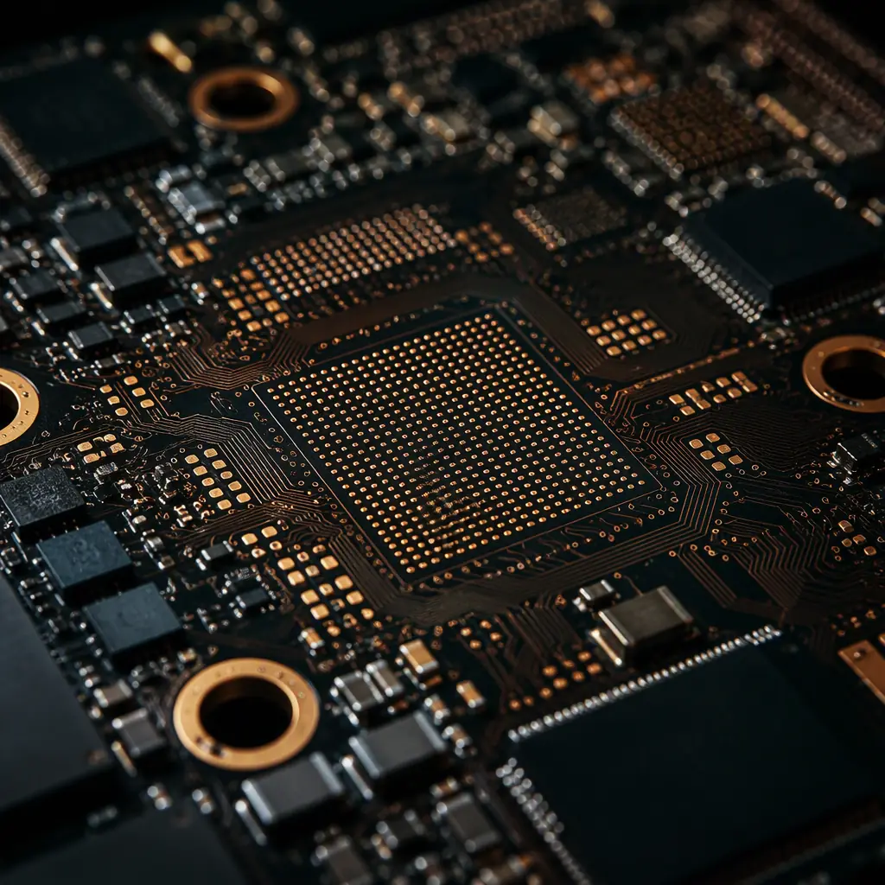
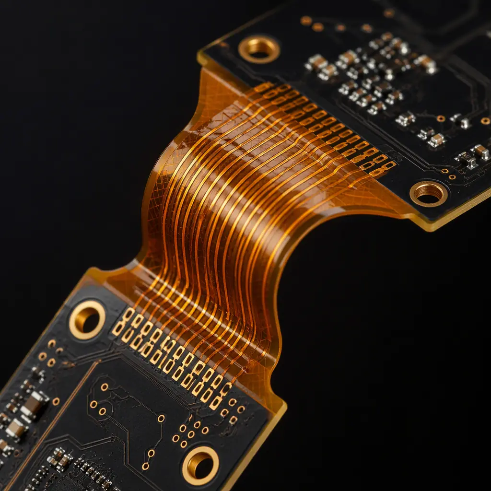
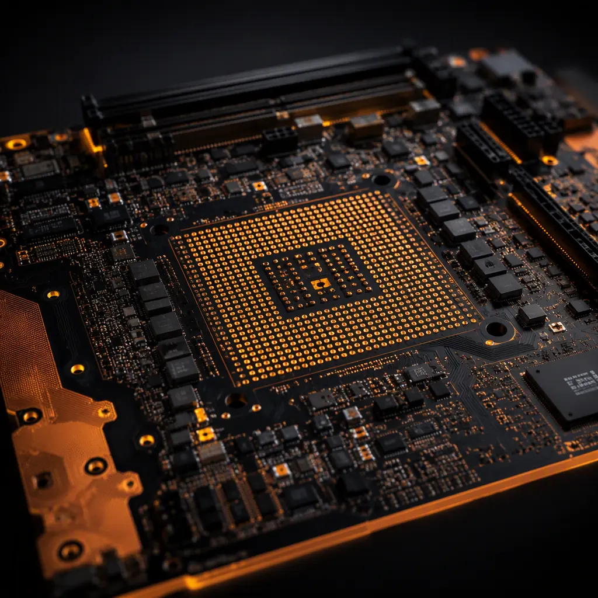

A modern VR headset drives two 4K micro-OLED panels at 90–120 Hz, tracks six degrees of freedom with four or more cameras, runs eye tracking at 200 Hz, and communicates over Wi-Fi 6E — all inside a package that must stay under 500 grams and below 45°C on the skin. Every one of those functions routes through a printed circuit board, and the board technology is the difference between a headset that feels like a product and one that feels like a prototype. For hardware teams and procurement managers sourcing VR and AR headset PCBs, the requirements are unusually demanding: any-layer HDI for display bandwidth, rigid-flex for the temple-to-front hinge, and thermal management that protects both the silicon and the wearer.
At Huaxing PCBA, we manufacture mainboards, display driver boards, and rigid-flex interconnects for AR/VR products at our Shenzhen facility — including any-layer HDI up to 16 layers, laser microvias at 0.075mm, and 2-ounce inner-layer copper for high-current display drivers. Our 8 SMT lines place 0201 and 0.3mm-pitch BGA components, and every headset board passes AOI, X-ray, and flying probe testing before shipment. Here is what you need to specify on your next headset PCB order.

Display Bandwidth: Why 4K Per Eye Changes Your PCB Stackup
A dual-4K headset at 90 Hz pushes roughly 30 Gbps of raw display data across the board. The display driver interface (typically MIPI DSI or eDP) runs differential pairs at 3–6 Gbps per lane, and the PCB stackup must preserve those signals across the entire route from SoC to panel connector. This is where generic 4-layer design fails and HDI earns its place:
Controlled Impedance at 85Ω and 100Ω on Every Display Lane
MIPI DSI pairs are specified at 100Ω differential, while eDP runs at 85–100Ω depending on lane configuration. The stackup must provide continuous reference planes beneath every differential pair — no plane splits, no layer changes without a ground via adjacent to the transition. At Huaxing PCBA we hold impedance tolerance to ±5% with TDR verification on every production panel. Our impedance control guide explains the stackup math in detail.
Any-Layer HDI — The Only Way to Escape the Fan-Out Bottleneck
The display SoC on a headset mainboard is typically a 0.4mm-pitch BGA with 400–800 pins, while the micro-display connector sits 15–25mm away on the front of the board. Routing that many high-speed lanes out of a fine-pitch BGA requires microvias on every layer — that is the definition of any-layer HDI. A 1+N+1 stackup (two laser microvia layers) cannot fan out a 0.4mm BGA without excessive routing layers; an any-layer design with stacked and staggered microvias achieves it in 8–12 layers. Our HDI technology guide compares 1+N+1, 2+N+2, and any-layer approaches with cost data.
Skew Control: Length Matching Within 5 mil Across 40+ Lanes
Display interfaces are byte-lane aligned; a 5-mil skew between lanes in a byte group causes timing violations that manifest as image corruption at random temperatures. High-volume headset boards specify intra-pair skew ≤ 2 mil and inter-pair skew ≤ 5 mil per byte group. This pushes real DFM limits: serpentine routing on inner layers, matched via counts per lane, and registration capability of ±50µm between layers. Not every fab holds ±50µm registration at 12+ layers — verify this specific number before committing volume. Our stackup design guide covers the layer planning behind these tolerances.
Procurement Insight: When comparing quotes for a headset mainboard, do not compare layer count alone. A 10-layer any-layer design with 0.075mm laser vias can outperform a 14-layer through-hole design at lower cost, because the any-layer stackup shortens routing and reduces the number of signal layers needed. Ask each supplier for their minimum microvia aspect ratio and registration tolerance — those two numbers determine whether your 4K display design will actually fan out cleanly.
Rigid-Flex for the Temple: The Hinge That Survives 50,000 Cycles
AR headsets and foldable VR designs route display, power, and sensor signals from the front module to the temple-mounted battery and compute section through a hinge that flexes every time the device is folded or adjusted. The interconnect across that hinge is a rigid-flex PCB, and its reliability requirement — typically 50,000 flex cycles — is the hardest mechanical spec in the product:
Flex Layer Count: 2 Layers Beats 4 for Dynamic Bending
Dynamic flex sections should use 2 copper layers maximum (some designs manage 1). Each additional copper layer stiffens the flex and shifts the neutral axis, dramatically reducing cycle life. The rigid sections can be 6–10 layers; the transition must be stepped and bonded with coverlay rather than soldermask. Specify polyimide base material (25–50µm) with rolled-annealed copper (1/2 oz) for dynamic sections — ED copper cracks under repeated bending. Our flex PCB guide details material selection for dynamic applications.
Bend Radius and Stiffener Design Decide Cycle Life
For 25µm polyimide with 1/2 oz copper, the minimum dynamic bend radius is 1.5mm — below that, copper fatigue failures appear within 10,000 cycles. The flex route must be designed with a constant bend radius (no sharp corners), and the hinge area needs a thin FR-4 or polyimide stiffener behind connector landing zones to prevent strain transfer to solder joints. Request bend-cycle test data (IPC-6013 Class 3 dynamic flex) with your first articles — it is the fastest way to tell which suppliers actually understand flex reliability. Our rigid-flex guide covers the design rules and cost factors.
Coverlay vs Soldermask: Only Coverlay Survives Bending
On the flex section, soldermask cracks at the bend line within a few thousand cycles because it has no elongation. The flex area must use polyimide coverlay (12.5–25µm) over the copper traces, with adhesive-laminated or adhesive-less construction. This is a common failure point in low-cost prototypes: the board looks identical to a production design but uses soldermask on the flex, and the hinge fails in the field. Put "coverlay on all dynamic flex areas, no soldermask" in the fabrication notes explicitly.

Thermal Budget: 5W in a Space the Size of a Matchbox
A VR headset mainboard dissipates 4–8W through an area of roughly 60×60mm, with no fan and strict skin-temperature limits (regulatory surface-temperature limits for wearable devices cap at ~48°C in contact areas, and comfort targets are lower). The PCB is both the heat source and the primary heat spreader:
| Heat Source | Typical Power | PCB Requirement |
|---|---|---|
| Display SoC / GPU | 2–4W | Exposed thermal pad + via array to inner plane |
| Micro-display driver ICs | 0.8–1.5W | Copper pour under each driver, 2oz inner layer |
| Wi-Fi 6E / BT module | 0.8–1.2W | Isolated ground island, thermal vias |
| Eye-tracking camera ISP | 0.3–0.6W | Thermal pad + keepout for sensor alignment |
| IMU + tracking sensors | 0.1–0.2W | Mechanical isolation, minimal thermal coupling |
The critical PCB techniques are thermal via arrays (0.2–0.3mm vias, 0.6–1.0mm pitch) directly under the SoC's exposed pad, connected to a dedicated 2oz thermal plane on layer 2, and edge-routed heat paths that carry heat toward the lens mount where a metal mid-frame acts as a heatsink. A common spec error: specifying 1oz inner copper to save cost, which doubles the thermal resistance of the spreader plane. The 2oz upgrade costs pennies per board and drops junction temperature by 8–15°C in practice. Our thermal management guide has the full via-array design rules.
Key Takeaway: In a headset, thermal design is not just reliability engineering — it is comfort engineering. Every watt that stays on the board raises skin-contact temperature and reduces how long users can wear the device. Specify the thermal plane and via strategy in the fabrication drawing, and validate with thermal camera imaging on first articles. A 10°C improvement here is a product-level feature, not a manufacturing detail.
Sensor Fusion Boards: Eye Tracking, Cameras, and IMU Placement
Inside a modern headset, four to six cameras (two passthrough, two eye-tracking, one or two depth/slam), an IMU, and often a proximity sensor must all coexist on small auxiliary boards with strict mechanical constraints. The PCB implications are subtle but decisive:
MIPI CSI Routing at 2.5 Gbps Per Lane on 6-Layer HDI
Camera modules connect over MIPI CSI-2 with 2–4 lanes at 1.5–2.5 Gbps. Each camera board needs its own controlled-impedance microstrip or stripline pair, with the sensor's MIPI clock pair isolated from the I2C control bus to prevent coupling. Camera PCBs are typically 6-layer HDI with 0.1mm laser vias, sized to fit in 10×15mm keepouts. Our crosstalk analysis guide covers pair isolation for these high-speed sensor busses.
IMU Isolation: The Board Is Part of the Sensor
The IMU measures accelerations of a few milli-g. PCB flexure, vibration from the display, and thermal warpage all corrupt its output. The IMU should sit on a stiffened, isolated island — either a dedicated rigid section with a stiffener, or on a small rigid-flex wing with mechanical decoupling from the mainboard. Keep high-current traces (display backlight, haptics) at least 5mm away from the IMU footprint. Sensor placement is a mechanical design decision that the PCB stackup must support with local stiffening. Our mixed-signal design guide details analog isolation techniques.
Wireless Coexistence: Wi-Fi 6E, Bluetooth, and UWB on One Board
Headsets now carry Wi-Fi 6E (6GHz band), Bluetooth LE, and increasingly UWB for controller tracking — three radios with antennas within centimeters of each other. The board needs dedicated antenna keepouts with clearance to ground, ideally antenna-on-board (AoB) or chip antennas with matched 50Ω feed lines, and careful filtering on shared power rails. Antenna tuning on a production board is a manufacturing-process interaction: solder mask thickness and copper finish (ENIG vs ENEPIG) shift resonant frequency by 1–3%. Our RF PCB guide covers antenna feed design and the finish trade-offs.

Procurement Checklist for VR/AR Headset PCBs
Verify Any-Layer HDI Capability With a Test Vehicle, Not a Brochure
Any-layer HDI is the highest-yield-risk process in headset boards. Ask for a coupon or test vehicle demonstrating stacked microvias through 3+ layer pairs, 0.075mm laser vias, and ±50µm registration on a board with the same layer count and thickness as your design. Ask what their typical first-pass yield is on 10-layer any-layer boards — a supplier who has not manufactured this class of board will quote it at a price that either loses money or cuts corners.
Put Bend-Cycle and Thermal Validation in the Contract
For rigid-flex temple boards, contractually require 50,000-cycle dynamic bend testing per IPC-6013 Class 3 on first articles, with resistance change ≤ 5% over the test. For the mainboard, require thermal cycling (−20°C to +85°C, 500 cycles) and a thermal camera validation report. These two tests catch 90% of headset PCB field failures before they happen. Our testing methods guide compares the full validation toolbox.
Specify Microvia Reliability Data, Not Just Microvia Presence
HDI microvias fail through barrel cracking under thermal cycling. Require IST (Interconnect Stress Test) data for your specific via configuration — stacked microvias need IST failure thresholds of 500+ cycles with resistance change under 10%. Ask whether the supplier fills vias with conductive or non-conductive epoxy, and how they handle via-in-pad for the 0.4mm BGA fan-out. Our via fill guide explains the reliability difference between fill types.
Plan for Panel Utilization — Headset Boards Are Awkwardly Shaped
Rigid-flex and oddly shaped headset boards can drop panel utilization below 60%, which directly inflates unit cost. Ask your supplier for a panelization DFM review before quoting volume: V-score, tab routing, and flex-section nesting choices can lift utilization from 55% to 75% with no design change. Our panelization guide shows the layout levers.
Summary: Headset PCBs Reward Suppliers Who Have Done It Before
VR and AR headset PCBs combine the hardest parts of consumer electronics — fine-pitch HDI, dynamic rigid-flex, dense thermal management, and multi-radio RF — into a single small board. The difference between a 70% and a 95% first-pass yield on these designs is almost entirely supplier process capability: microvia registration, impedance control, flex-cycle discipline, and thermal validation. These are not things you can inspect at incoming quality control; they are baked in during manufacturing.
At Huaxing PCBA, we manufacture AR/VR mainboards, display driver boards, and rigid-flex interconnects at our Shenzhen facility, with any-layer HDI to 16 layers, 0.075mm laser microvias, 2oz inner-layer copper, and IPC-6013 Class 3 rigid-flex capability. Our quality system (IATF 16949 and ISO 9001 certified) applies automotive-grade process discipline to wearable electronics. Read our consumer electronics PCB guide for the broader wearable design framework, or send us your headset PCB files for a DFM review with stackup, impedance, and panelization analysis within 24 hours.